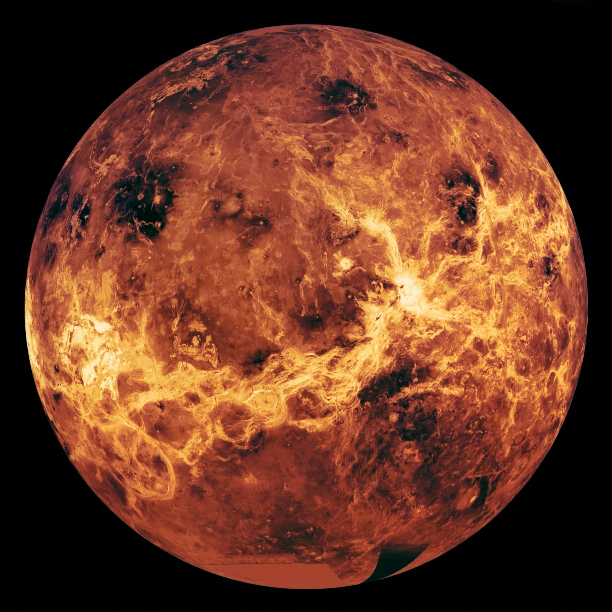
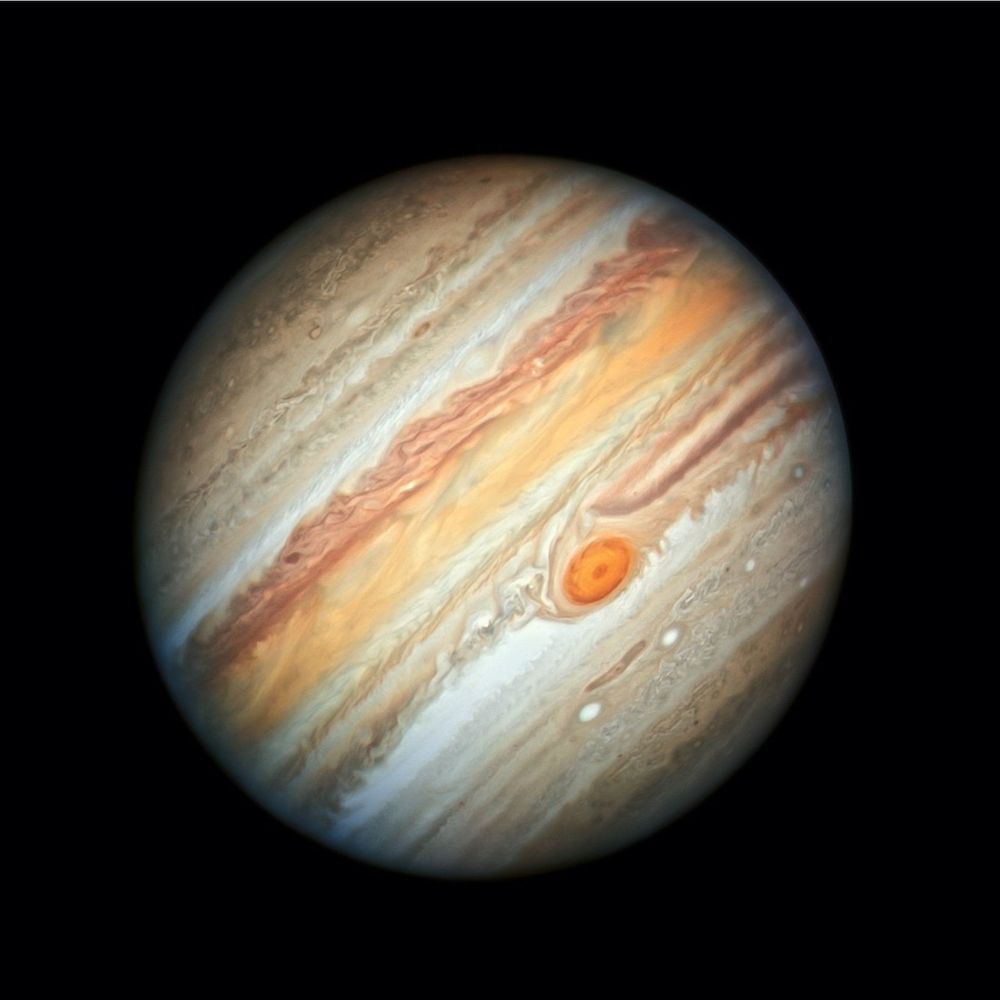
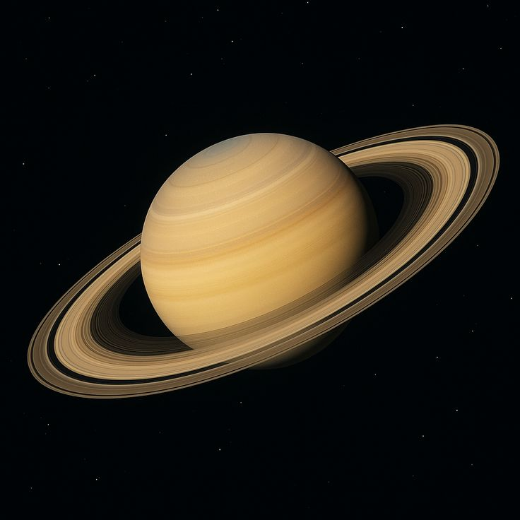
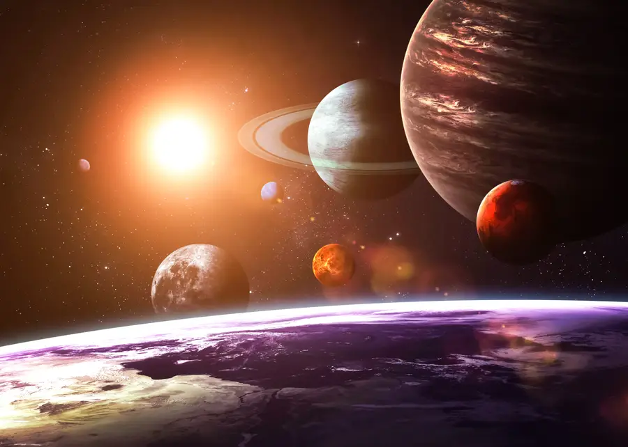

The Solar System formed about 4.6 billion years ago from a large cloud of gas and dust. At the center is the Sun, which holds almost all the mass of the entire system. Because of its strong gravity, the Sun keeps eight planets, their moons, asteroids, and comets moving around it. The inner planets—Mercury, Venus, Earth, and Mars—are small and rocky, while the outer planets are much larger and made mostly of gas or ice. Fun fact: If the Sun were the size of a basketball, Earth would be as small as a peppercorn and very far away, showing how empty space really is.
The Solar System is not quiet or still; it is always changing. Asteroids travel through space, comets move in long paths, and planets rotate and orbit at different speeds. Jupiter, the largest planet, has very strong gravity that can pull in asteroids or push them away from the inner planets. Fun fact: Scientists have discovered more than 200 moons so far, and new ones are still being found. This shows that the Solar System is active and full of motion, not just a simple group of planets.

“Every planet in the Solar System tells a different story.”



Mercury is the smallest planet in the Solar System and the one closest to the Sun. It orbits the Sun every 88 Earth days and has almost no atmosphere, causing extreme temperature changes between day and night.
As the first planet from the Sun, Mercury lies between the Sun and Venus. It is difficult to see from Earth because it stays close to the Sun, appearing only briefly during sunrise or sunset.
Mercury is named after the Roman messenger god because it moves faster across the sky than any other planet. It completes one orbit around the Sun in just 88 Earth days, making it appear to race through the heavens. This speed creates strange effects—because of Mercury’s slow rotation and fast orbit, a single day on the planet lasts longer than an entire Mercury year, completely breaking our normal idea of time.
Mercury has been known since around 3000 BCE, but it was one of the hardest planets for ancient astronomers to observe. Because it stays so close to the Sun, it is visible only briefly at sunrise or sunset. This caused confusion, and some early civilizations believed Mercury was actually two separate objects appearing at different times of day.
No single person discovered Mercury; it was observed by civilizations such as the Babylonians, Egyptians, and Greeks. Modern space missions later revealed that Mercury has an unusually large iron core and water ice hidden inside permanently shadowed craters, proving that even the closest planet to the Sun can hold frozen water.
Venus is the second planet from the Sun and is similar in size to Earth, often called Earth’s “twin.” It orbits the Sun every 225 Earth days and has a thick, toxic atmosphere that traps heat, making it the hottest planet in the Solar System—even hotter than Mercury.
Located between Mercury and Earth, Venus is one of the brightest objects in the night sky. From Earth, it is easily visible just after sunset or before sunrise, which is why it is often known as the Morning Star or Evening Star.
Venus is named after the Roman goddess of love and beauty because it shines brighter than any other planet in the night sky. To ancient observers, Venus appeared smooth, calm, and radiant, making it seem gentle and beautiful. This peaceful appearance is ironic, as Venus is actually one of the most hostile planets in the Solar System.
Venus has been known since ancient times, with records dating back more than 3,000 years. Many civilizations closely followed Venus because of its predictable appearances as a morning and evening star. Some cultures even built calendars around its cycle, believing it held spiritual meaning.
Venus was observed by many ancient civilizations, but modern science revealed its true nature. Spacecraft discovered that Venus rotates backward, has clouds made of sulfuric acid, and experiences surface temperatures hot enough to melt lead. Its thick atmosphere traps heat so efficiently that Venus became the hottest planet, even hotter than Mercury.
Earth is the third planet from the Sun and the only known planet that supports life. It orbits the Sun every 365 days and has a balanced atmosphere that helps regulate temperature and protects life from harmful radiation.
Located between Venus and Mars, Earth has liquid water on its surface and a strong magnetic field. From space, it appears as a blue planet due to its vast oceans, which is why it is often called the “Blue Planet.”
The name “Earth” comes from Old English and Germanic words meaning ground or soil, which reflects how humans originally understood the planet—as the land beneath their feet, not a body in space. Unlike other planets, Earth was never named after a god because ancient people did not see it as something in the sky. This makes Earth unique in the Solar System, as its name represents human connection and survival rather than mythology.
Earth was never discovered, but understanding it as a planet took thousands of years. Ancient civilizations already knew Earth was large and round, but many believed it was the center of the universe. Over time, careful observations of the Sun, Moon, and planets led scientists to realize Earth moves through space, rotating once every 24 hours and orbiting the Sun every 365 days.
Thinkers such as Copernicus, Galileo, and Kepler helped prove Earth is one of several planets orbiting the Sun. Earth is still special because it has liquid water on its surface, plate tectonics that recycle land, a thick atmosphere rich in oxygen, and a strong magnetic field that protects life from harmful solar radiation.
Mars is the fourth planet from the Sun and is often called the Red Planet because of its iron-rich surface. It orbits the Sun every 687 Earth days and has a thin atmosphere, leading to cold temperatures and strong dust storms.
Located between Earth and Jupiter, Mars has the largest volcano and canyon in the Solar System and shows signs that liquid water once flowed on its surface, making it a key target in the search for past life.
Mars is named after the Roman god of war due to its reddish appearance, which ancient people associated with blood and fire. This red color comes from iron oxide, or rust, covering much of the planet’s surface. Because of this color, Mars has always stood out in the night sky and inspired myths, fear, and curiosity across cultures.
Mars has been known since around 2000 BCE, and its noticeable movement across the sky made it especially important to early astronomers. Unlike stars, Mars changes position night by night, helping ancient civilizations understand planetary motion and time.
Mars was observed by ancient cultures long before telescopes existed. Later, scientists using modern instruments discovered dried riverbeds, minerals formed in water, and polar ice caps. Mars also has the largest volcano and deepest canyon in the Solar System, suggesting it was once much warmer and wetter than it is today.
Jupiter is the fifth planet from the Sun and the largest planet in the Solar System. It orbits the Sun every 12 Earth years and is a gas giant made mostly of hydrogen and helium, with powerful storms including the famous Great Red Spot.
Located between Mars and Saturn, Jupiter has a strong gravitational pull and dozens of moons, including Europa, Ganymede, and Io. Its massive size helps protect the inner planets by deflecting or capturing many asteroids and comets.
Jupiter is named after the king of the Roman gods, and honestly, the name fits perfectly. It is the largest planet in the Solar System, more massive than all the other planets combined. Ancient astronomers associated Jupiter with power and authority because it shines brightly and moves slowly across the sky, almost like it’s watching over everything else. A cool detail is that many of Jupiter’s moons are also named after characters linked to the god Jupiter, reinforcing its role as the “ruler” of planets.
Jupiter has been known since ancient times and was carefully observed by civilizations like the Babylonians and Greeks. Because it takes 12 Earth years to orbit the Sun, its slow movement helped early astronomers track long-term cycles in the sky. One interesting detail is that Jupiter was used as a reference point in early calendars because of its predictable motion.
Jupiter was not discovered by one person, but Galileo Galilei revolutionized our understanding of it in 1610 when he discovered four large moons orbiting it. This was shocking at the time because it proved that not everything revolves around Earth. Jupiter’s gravity is so strong that it acts like a cosmic shield, pulling in or deflecting many asteroids and comets. The famous Great Red Spot is actually a storm that has been raging for over 300 years—longer than many human civilizations have existed.
Saturn is the sixth planet from the Sun and is best known for its stunning ring system. It orbits the Sun every 29 Earth years and is a gas giant made mostly of hydrogen and helium, with powerful winds and storms in its atmosphere.
Located between Jupiter and Uranus, Saturn has dozens of moons, including Titan, the second-largest moon in the Solar System. Despite its massive size, Saturn has a very low density, meaning it would float in water if a body of water large enough existed.
Saturn is named after the Roman god of time, harvest, and aging, which matches its slow and steady movement across the sky. It takes almost 30 Earth years to complete one orbit, making it one of the slowest-moving planets visible to ancient observers. This connection to time is poetic, especially since Saturn’s rings constantly change in appearance as it moves through space.
Saturn has been known since ancient times, but for thousands of years, people had no idea it had rings. To the naked eye, it simply appeared as a bright star-like object. Its true beauty remained hidden until telescopes were invented, showing how limited human understanding once was.
Ancient civilizations observed Saturn, but Galileo Galilei was the first to see its rings—though he thought they were strange “ears.” Later astronomers realized the rings are made of billions of pieces of ice and rock. Saturn is so low in density that it could float in water if a body of water large enough existed. Its moon Titan is especially fascinating because it has rivers, lakes, and rain—just not made of water, but liquid methane.
Uranus is the seventh planet from the Sun and is known for its pale blue color caused by methane in its atmosphere. It orbits the Sun every 84 Earth years and is an ice giant made mostly of hydrogen, helium, and icy materials, with extremely cold temperatures.
Located between Saturn and Neptune, Uranus rotates on its side, making its seasons extreme and unusual. It has a faint ring system and dozens of moons, including Titania and Oberon.
Uranus is named after the Greek god of the sky, making it unique among the planets, which are mostly named after Roman gods. The name fits because Uranus feels distant, cold, and mysterious. Its pale blue color comes from methane gas absorbing red light, giving it a calm but eerie appearance.
Uranus was discovered in 1781, which was a huge moment in astronomy. Before that, humans believed the Solar System ended at Saturn. Uranus proved that there was much more beyond what could be seen with the naked eye, expanding humanity’s understanding of space overnight.
William Herschel discovered Uranus while scanning the sky with a telescope, initially thinking it was a comet. Later studies revealed something shocking: Uranus rotates on its side. This causes extreme seasons where parts of the planet experience 42 years of daylight followed by 42 years of darkness. It also has rings and many moons, showing that even “quiet-looking” planets can be complex.
Neptune is the eighth and farthest planet from the Sun and is known for its deep blue color. It orbits the Sun every 165 Earth years and is an ice giant with the strongest winds in the Solar System, reaching speeds faster than sound.
Located beyond Uranus, Neptune has a dark, stormy atmosphere and several moons, including Triton, which orbits the planet in the opposite direction of most moons. Its distant position makes it one of the coldest and most mysterious planets.
Neptune is named after the Roman god of the sea, inspired by its deep blue color. This color hides a violent world beneath—Neptune may look calm, but it is one of the most extreme planets in the Solar System. The name perfectly matches its stormy, ocean-like appearance.
Neptune was discovered in 1846, but what makes this incredible is how it was found. Astronomers noticed Uranus’s orbit didn’t behave as expected and predicted that another planet must be pulling on it. Neptune became the first planet discovered using mathematics before direct observation.
Neptune was observed by Johann Galle, guided by calculations from Urbain Le Verrier and John Couch Adams. Neptune has the fastest winds ever recorded, reaching speeds over 2,000 km/h. Its moon Triton orbits backward, suggesting it was captured from another region of space, making Neptune one of the most mysterious planets ever studied.
The Sun is the center of the Solar System and a massive star made mostly of hydrogen and helium. It produces energy through nuclear fusion, where hydrogen atoms combine to form helium, releasing enormous heat and light. The Sun is about 4.6 billion years old and contains more than 99% of the total mass of the entire Solar System.
Located at the heart of the Solar System, the Sun’s gravity holds all planets, moons, asteroids, and comets in orbit. Its surface temperature reaches about 5,500°C, while its core is over 15 million°C. The Sun also releases solar flares and winds that can affect Earth’s auroras, satellites, and communication systems.
The name “Sun” comes from ancient words meaning the source of light, and for most of human history, it was seen as a powerful force rather than an object in space. Many civilizations worshipped the Sun as a god because its light controlled crops, seasons, and survival itself. Scientifically, the Sun is a yellow dwarf star, but calling it “dwarf” is misleading—it is so massive that it contains about 99.8% of the total mass of the Solar System. Its gravity is what keeps all eight planets locked in their orbits, preventing the Solar System from drifting apart into space.
The Sun has been known since prehistoric times, long before humans understood stars or space. Early humans carefully observed the Sun’s rising and setting points, which slowly led to the invention of calendars and timekeeping. Ancient structures such as Stonehenge and pyramids were aligned with solar events like solstices, proving that humans tracked the Sun with impressive accuracy. These observations helped societies predict seasons, floods, and harvest cycles, shaping entire civilizations.
Although no one discovered the Sun, scientists such as Galileo Galilei revealed that it was not perfect or unchanging by observing sunspots. Later, scientists discovered that the Sun produces energy through nuclear fusion, where hydrogen atoms combine to form helium, releasing enormous amounts of energy. Every second, the Sun converts millions of tons of matter into energy, and even a tiny fraction of this power is enough to sustain all life on Earth.